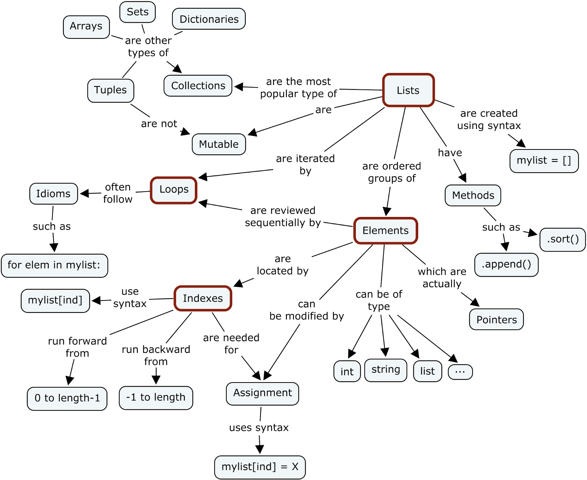

Basic concepts
Data structure

Variable
NumberStringTupleList: Mutable, containerDictionary: Mutable, containerSet: Mutable, containerNone: empty value
tuple = (1, 2, 3)
list = [1, 2, 3]
dict = {"ele1":1, "ele2":2, "ele3":3}Operators
Numerical Operators: - < : less than - > : greater than - <= : less than or equal to - >= : greater than or equal to - == : equal to - != : not equal to
String Operators: - == : equal to - != : not equal to
Logical Operators: - and - or - not
Conditional execution
Conditional execution in Python is achieved using the if/else construct (if and else are reserved words).
# Conidtional execution
x = 10
if x > 10:
print("I am a big number")
else:
print("I am a small number")
# Multi-way if/else
x = 10
if x > 10:
print("I am a big number")
elif x > 5:
print("I am kind of small")
else:
print("I am really number")Iteration/Lopps
Two looping constructs in Python
For: used when the number of possible iterations (repetitions) are known in advanceWhile: used when the number of possible iterations (repetitions) can not be defined in advance. Can lead to infinite loops, if conditions are not handled properly
for customer in [“John”, “Mary”, “Jane”]:
print(“Hello ”, customer)
print(“Please pay”)
collectCash()
giveGoods()
hour_of_day = 9
while hour_of_day < 17:
moveToWarehouse()
locateGoods()
moveGoodsToShip()
hour_of_day = getCurrentTime()What happens if you need to stop early? We use the break keyword to do this.
It stops the iteration immediately and moves on to the statement that follows the looping
while hour_of_day < 17:
if shipIsFull() == True:
break
moveToWarehouse()
locateGoods()
moveGoodsToShip()
hour_of_day = getCurrentTime()
collectPay()What happens when you want to just skip the rest of the steps? We can use the continue keyword for this.
It skips the rest of the steps but moves on to the next iteration.
for customer in ["John", "Mary", "Jane"]:
print(“Hello ”, customer)
print(“Please pay”)
paid = collectCash()
if paid == false:
continue
giveGoods()Exceptions
- Exceptions are errors that are found during execution of the Python program.
- They typically cause the program to fail.
- However we can handle them using the ‘try/except’ construct.
num = input("Please enter a number: ")
try:
num = int(num)
print("number squared is " + str(num**2))
except:
print("You did not enter a valid number")General functions
help()
type()
len()
range()
list()
tuple()
dict()Reference
- https://www.py4e.com/
- https://omgenomics.com/
- https://www.coursera.org/learn/bioinformatics
- http://do1.dr-chuck.com/pythonlearn/EN_us/pythonlearn.pdf
- https://www.py4e.com/html3
- http://do1.dr-chuck.com/pythonlearn/EN_us/pythonlearn.epub
- Primer on Python for R Users